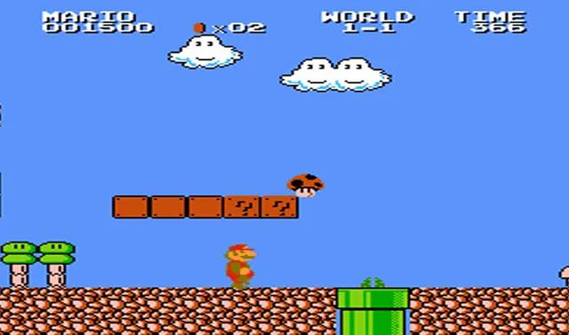

Super Mario Bros
Es un videojuego de plataformas, diseñado por Shigeru Miyamoto, lanzado el 13 de septiembre de 1985 y producido por la empresa japonesa Nintendo, para la consola Nintendo Entertainment System. El juego describe las aventuras de los hermanos Mario y Luigi, personajes que ya protagonizaron el arcade Mario Bros. de 1983. En esta ocasión ambos deben rescatar a la Princesa Peach del Reino Champiñón que fue secuestrada por el rey de los Koopas, Bowser. A través de ocho diferentes mundos, los jugadores pueden controlar a alguno de los dos hermanos y deben enfrentarse finalmente tras los niveles correspondientes de cada mundo a los monstruos de cada castillo para rescatar a la Princesa Peach.
Fue el juego que popularizó al personaje de Mario, convirtiéndolo en el ícono principal de Nintendo, y uno de los personajes más reconocidos de los videojuegos, así como su hermano menor Luigi. Además, presentó por primera vez a la Princesa Peach Toadstool, Toad, Bowser, entre otros personajes. Este juego es considerado el primer videojuego de plataformas de desplazamiento lateral de Nintendo y se ha convertido en un hito debido a la trascendencia de su diseño y papel en la industria de los videojuegos. Su lanzamiento fue el primer gran récord de ventas posterior a la crisis de la industria de los videojuegos de 1983, por lo que popularizó, en cierta manera, a la consola NES. En 1999 fue reconocido como uno de los videojuegos más vendidos de todos los tiempos. Shigeru Miyamoto, su creador, relata la existencia de Super Mario Bros. debido a que cuando viajaba en un tren le gustaba mirar por la ventana, y se imaginaba que estaba allí saltando afuera.6 Debido a la popularidad de Mario, se encuentra también en otros videojuegos como el original Donkey Kong y Super Smash Bros.
Jugabilidad
El jugador toma el rol de Mario o, en caso de ser el segundo jugador, presionando «Select» en su control, de Luigi. El objetivo es recorrer el Reino Champiñón para derrotar a las fuerzas del Rey Koopa y salvar a la Princesa Peach. Si reciben un contacto enemigo, se pierde una vida, por ello, los hermanos Mario tienen un primer ataque que consiste simplemente en saltar sobre el enemigo, siendo los champiñones conocidos como Goombas los primeros en aparecer; igualmente es posible saltar sobre los Koopa Troopas, y saltando una segunda vez sobre ellos es posible lanzar su caparazón. Al patear este caparazón, se puede derrotar también a los enemigos que se encuentran delante, con el inconveniente de que si hay un obstáculo, el caparazón regresa y puede herir a Mario o Luigi. Si Mario o Luigi cogen un champiñón aumentan de tamaño, y pueden ser heridos hasta dos veces antes de perder una vida (conociéndose esta transformación como Super Mario/Luigi); y cogiendo una flor (Mario fuego/Luigi fuego), obtienen la habilidad de lanzar bolas de fuego con un máximo de dos por vez. Algunos enemigos no pueden ser derrotados saltando sobre ellos; estos solo pueden ser eliminados con un caparazón o con las bolas de fuego, o bien al ser tocados por Mario estrella/Luigi estrella.
Mario o Luigi pueden ser heridos al tocar al enemigo. Si el enemigo toca a Super Mario/Luigi o Mario fuego/Luigi fuego, el personaje regresa a su pequeña forma original, pero si ya estaba en su forma original se pierde una vida. El punto desde donde inicia Mario después de perder una vida, depende de hasta donde se haya avanzado en el recorrido. En cada nivel (excepto en el mundo 8 y en los castillos) hay un punto de control. Si el personaje pierde la vida antes de tal punto, vuelve a iniciar desde el principio del nivel, pero si la pierde pasado el punto, inicia desde el punto de control. Mario o Luigi pueden coger también una estrella y volverse invulnerables por un tiempo limitado. Mario estrella/Luigi estrella (como se le conoce a la transformación) pueden avanzar sobre varios obstáculos sin problemas, y al contacto con el enemigo, este último es derrotado. Pero esto no sucede si cae a un precipicio, a la lava o si se acaba el tiempo, ya que en esos casos se perdería una vida.
El juego consta de 8 mundos con 4 niveles cada uno —mostrándose como nivel 1-1, 1-2, 1-3, 1-4, 2-1 y así sucesivamente hasta llegar al 8-4—. Cada nivel es diferente, al igual que su banda sonora. Hay cuatro estilos diferentes de mundos: el principal es el del Reino Champiñón, lleno de bloques de ladrillos o setas gigantes, y pueden ser tanto de día o de noche; niveles subterráneos, a los que se accede a través de tuberías; niveles acuáticos, los cuales deben ser cruzados nadando; y castillos, que son todos los cuartos niveles. Al final de los niveles 1, 2 o 3 de cada mundo hay un asta blanca con una bandera verde en la cual Mario o Luigi deben bajar la bandera para poder acceder al siguiente nivel. Para hacerlo cuentan con un límite de tiempo. A veces, cuando se llega a la bandera en un momento determinado, se lanzan fuegos artificiales. El objetivo es llegar al cuarto nivel de cada mundo, es decir, al castillo. Al final de cada castillo, Mario o Luigi debe enfrentarse a Bowser. Si uno de ellos lanza cinco balazos sobre él, se descubre que en realidad era solo un disfraz, y el verdadero se encuentra en otra parte. A partir del mundo 6, el Rey Koopa lanza martillos y a su vez fuego. Hay otra manera de derrotarlo: al final del puente donde se encuentra Bowser hay un hacha, que al tocarla corta las cuerdas del puente, haciendo caer a Bowser en la lava. Tras esto, Mario o Luigi se acerca a un guardia del reino que dice:
Gracias Mario [o Luigi]Pero nuestra princesa está en otro castillo.
Cuando llega al nivel 8-4, Mario se encuentra dentro de un castillo, como los primeros, en forma de laberinto. Al pasar dicho laberinto, se encuentra nuevamente con Rey Koopa, que lanza bolas de fuego y martillos. De manera similar a las anteriores, se le vence de las dos formas posibles. Luego de derrotarlo, Mario avanza hacia el lugar en donde en las fases anteriores se encontraba con Toad, aunque esta vez aparece la Princesa Peach diciendo «Thank you Mario («¡Gracias Mario [o Luigi]! Tu búsqueda ha terminado. Te presento una nueva búsqueda. Presiona B para seleccionar un mundo»).
Género
Curiosidades
- Fue creado por Shigeru Miyamoto.
- Su primera aparición fue en un juego de arcade de Donkey Kong de 1981. Ahí, su nombre era Jumpman .
- En 1982, en la secuela Donkey Kong Jr, fue cuando se le cambió el nombre a Mario. Se cree que se llamó así en honor a Mario Segale, el dueño de un bloque de oficinas de Nintendo . Ese es el único videojuego donde Mario ha tenido el papel antagónico.
- Shigeru Miyamoto confirmó en 2015 que el nombre completo del personaje es Mario Mario. Su hermano se llama Luigi Mario.
- En 1983, cuando salió Mario Bros, se tomó la decisión de cambiar su profesión a plomero debido a que mucha parte de la acción ocurre en escenarios subterráneos.
- La franquicia de Mario es la más vendida de la historia. Desde la década de los 80 hasta la fecha, con todos sus títulos, amigos y enemigos, Mario ha vendido más de 500 millones de copias.
Personajes
Desde la deslumbrante realeza hasta los amenazantes monstruos, el Reino Champiñón nos ha brindado una gran cantidad de personajes inolvidables a través de los años.

Mario
El héroe principal del Reino Champiñón. Mario es muy positivo y siempre está alegre. Lo podrás reconocer por sus overoles de color azul, su gorra roja y su característico bigote. La princesa Peach lo considera su amigo de confianza, y todo el mundo los conoce a él y a su hermano Luigi por sus actos de valentía. Mario utiliza su poderosa habilidad para saltar y una gran cantidad de mejoras para enfrentarse a su archienemigo, Bowser.
Luigi
Hermano de Mario y héroe del Reino Champiñón. Luigi es reconocido instantáneamente por su gorra y camisa de color verde.Luigi es amable, pero un poco de nervioso, especialmente si hay fantasmas por ahí. Sin embargo, sus habilidades igualan las habilidades de Mario, así que cuando estos hermanos se unen, no hay nada que no puedan lograr.Luigi es más alto y puede saltar más alto que Mario. Si pones atención, también podrás notar que la forma de su bigote también es un poco diferente.
Peach
La querida princesa del Reino Champiñón. Es extremadamente amable y siempre está trabajando para crear un mundo en el que todos puedan convivir juntos y felices. Su famoso vestido color rosa es encantador. Ella y Mario son muy buenos amigos y siempre están dispuestos a ayudarse mutuamente cuando pueden.
Toad
Residente del Reino Champiñón, trabaja al servicio de la Princesa Peach. Toad tiene manchas rojas en la cabeza, aunque otros de su especie vienen en una variedad de colores. Toad es muy alegre y leal. Hace todo lo posible por ayudar a Mario y a Luigi en sus esfuerzos por proteger el Reino Champiñón de Bowser, incluso si eso significa enfrentarse al peligro durante en el proceso.
Bowser
El rey de los Koopas. Bowser es el archienemigo de Mario y siempre está causando estragos en el Reino Champiñón.Bowser cuenta con muchos secuaces que incluyen a los Koopas, Goombas, Bill Bala y Shy Guys. Cada vez que le pone la mirada al Reino Champiñón sus planes se ven frustrados por Mario y sus amigos. Este poderoso enemigo posee una gran fuerza y hasta puede escupir fuego
Bowser Jr.
Hijo único de Bowser, el rey de los Koopas. A menudo lo verás usando una intimidante máscara con una boca pintada en ella. Bowser Jr. es pequeño pero ha heredado la gran fuerza de su padre. Se vuelve berrinchudo si las cosas no salen como él quiere. Es conocido por ser muy problemático y puede ser un poco egoísta.
Boo
Unos traviesos fantasmas que suelen deambular en lugares oscuros y abandonados. Puede que estos fantasmas sean espeluznantes, pero también son increíblemente tímidos. Se congelarán en su lugar y se cubrirán los ojos si alguien los mira directamente.
Donkey Kong
El rey de la jungla, se distingue por una corbata roja con sus iniciales. Donkey Kong puede lanzar gigantescos barriles con la mayor facilidad, y su fuerza es tan grande que el suelo tiembla cada vez que lo golpea. Le encantan los plátanos y siempre guarda con una gran cantidad en su hogar.
Primera versión
Super Mario Bros 1985
Un día el reino de las pacíficas personas Champiñón fue invadido por Koopa, una tribu de tortugas famosas por su magia negra. Las calladas y pacíficas personas Champiñón fueron convertidas en simples piedras, ladrillos y hasta plantas y el Reino Champiñón cayó en la ruina. La única que podía deshacer este hechizo mágico en las personas Champiñón y regresarlas a la normalidad es la princesa Toadstool, la hija del Rey Champiñón. Desafortunadamente ella está en manos de Bowser, el rey de los Koopas.Mario se entera de los apuros de las personas Champiñón y se embarca en una aventura para liberar a la princesa del malvado Koopa y restaurar el reino caído de las personas Champiñón.¡Tú eres Mario! ¡Dependerá de ti rescatar a las personas Champiñón de la magia negra de Koopa!
